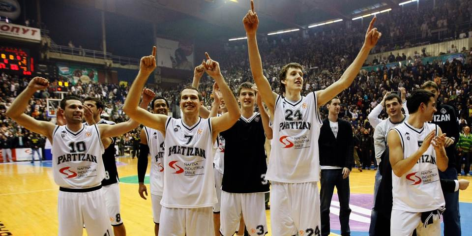

Kosarkaski klub Partizan osnovan je 1945. godine u Beogradu. Od samog pocetka klub je privukao veliki broj talentovanih igraca i postao simbol srpske kosarke
Partizan je 1992. godine osvojio svoju prvu titulu Evrolige pod vodjstvom trenera Zeljka Obradovica, pobedivsi Huventud u finalu u Istanbulu
U ovom periodu, Partizan je osvojio tri uzastopne titule u ABA ligi i dominirao domacim takmicenjima, postavsi sinonim za uspeh u regionu
Nakon vise od dve decenije, Zeljko Obradovic se vratio u klub sa ciljem da Partizan ponovo postavi na mapu evropske kosarke